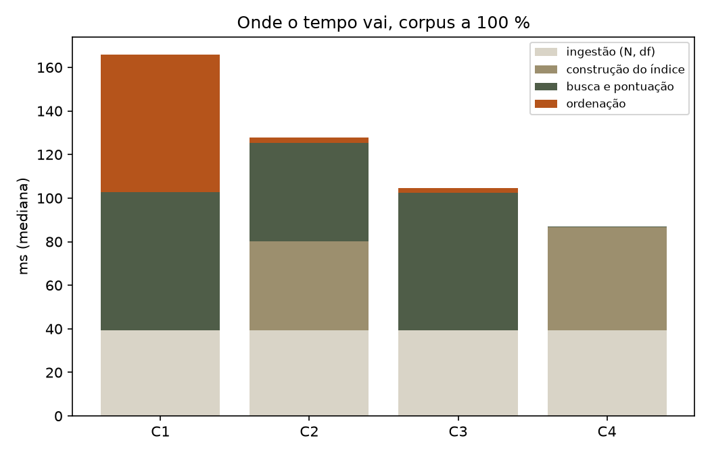
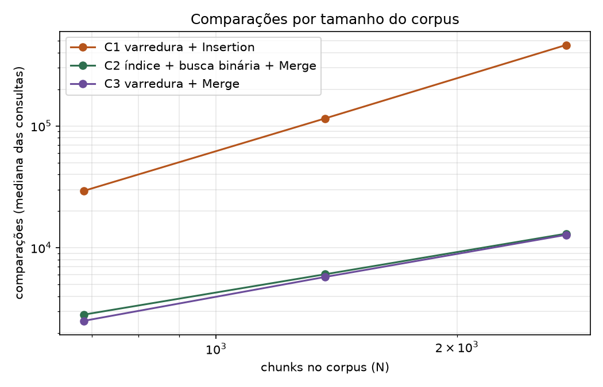
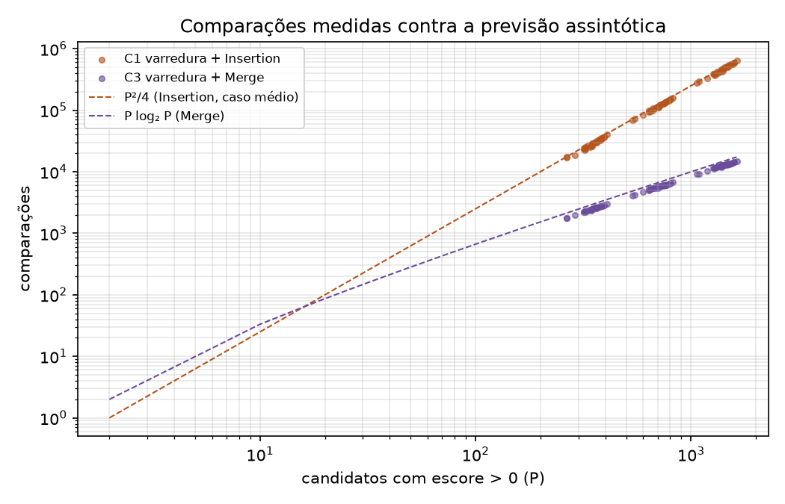
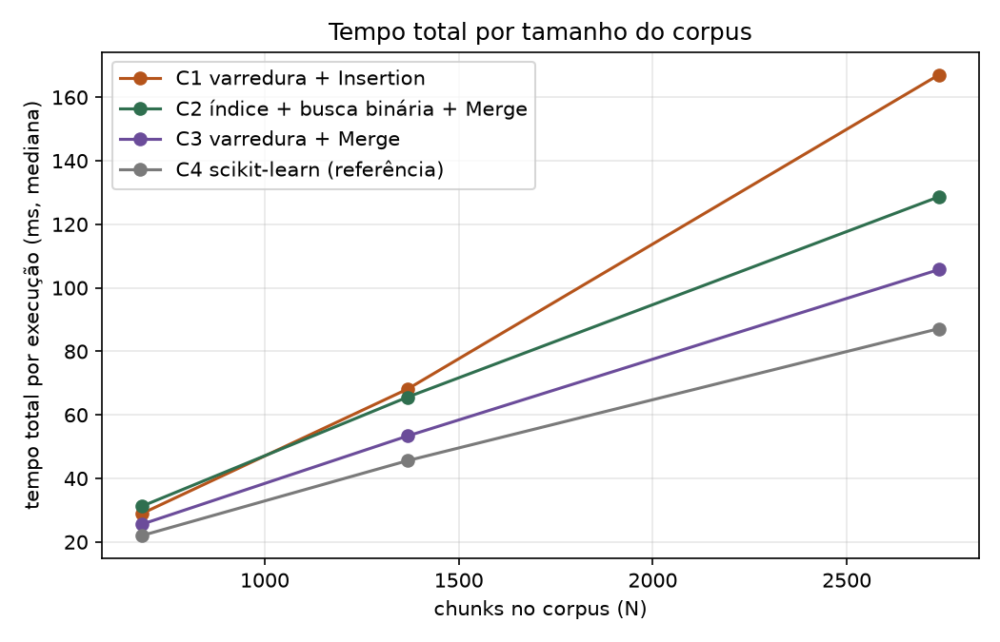

| Tema | 8, materiais educacionais abertos |
|---|---|
| Corpus | Pense Python, tradução livre da 3ª edição de Think Python (Allen B. Downey; trad. Rodrigo Castelan Carlson) |
| Repositório | https://github.com/joaocss/PAA_UFS_2026_2_SenaSa_Joao_Bispo_Hernandison_Galvao_Nadianne_Goto_Rafael_Leal_Helena_Silva_Eduardo |
| Licença · versão | MIT · commit 68fa986 do main; tag v1.0.0 na entrega |
| Vídeo da atividade | Gravações individuais: João, https://www.loom.com/share/aab4b4cd6a934bb892fd6c4bb73bcd85; Nadianne, https://drive.google.com/file/d/1WWhyEl1k9qLuE8Sod03WE9qJ3bNDWx3Y/view?usp=drive_link; Rafael, https://drive.google.com/file/d/13jiWmtcPA6ZGqowYDyxqEHd5966waPa8/view?usp=sharing. A URL do vídeo consolidado substitui esta lista em README.md e VIDEO.md. |
Este relatório foi montado a partir dos documentos versionados no repositório: docs/RESULTADOS.md, docs/CORRETUDE.md, docs/PROTOCOLO_EXPERIMENTAL.md, docs/CONTRATOS.md, docs/USO_DE_IA.md, docs/CONTRIBUICOES.md, data/README.md e das tabelas e figuras de experimentos/. Todos os números vêm de experimentos/brutos/execucoes.jsonl, gerado por scripts/rodar_experimentos.py.
Equipe de seis discentes matriculados em Projeto e Análise de Algoritmos (PROCC0083), turma T01, período 2026.2, na modalidade de trabalho em equipe (5 a 7 integrantes).
| Integrante | Frente principal |
|---|---|
| João Cosme Sena Sá | Dados de teste, pacote e testes, protocolo e execução dos experimentos, índice invertido e busca binária (C2), entrega |
| Eduardo Henrique do Lago Silva | Experimentos, tabelas, gráficos e baseline de referência (C4) |
| Helena Carvalho Leal | Consultas, julgamentos de relevância, métricas, relação com IA generativa e limitações |
| Hernandison da Silva Bispo | Ingestão, normalização e fragmentação; manutenção do relatório |
| Nadianne Maria dos Santos Galvão | Corretude, modelo RAM, complexidade e recorrências |
| Rafael Takeguma Goto | Busca linear, Insertion Sort, Merge Sort, pontuação e consulta (C1 e C3) |
A tabela de contribuição individual com evidências (commits, arquivos, execuções) está na Seção 17 e em docs/CONTRIBUICOES.md. A revisão de código, da prova e dos resultados é responsabilidade coletiva.
O tema é o de número 8 do enunciado, materiais educacionais abertos, com a pergunta de recuperação "quais são os conceitos-chave de um tópico?" instanciada em 30 consultas de estudante sobre o livro. O corpus é Pense Python, tradução livre da 3ª edição de Think Python, de Allen B. Downey, traduzida por Rodrigo Castelan Carlson: conteúdo didático público, sem dados pessoais ou sigilosos.
| Campo | Registro |
|---|---|
| Fonte | https://rodrigocarlson.github.io/PensePython3ed/ e https://github.com/rodrigocarlson/PensePython3ed |
| Commit de referência | cfde2c450bf4f2ea65326da88e9968f400597e92 (branch main) |
| Data de acesso | 02/09/2026 (aquisição registrada em data/corpus_manifest.csv) |
| Recorte e formato | 21 notebooks Jupyter (capitulos/*.ipynb): prefácio, introdução ao Jupyter e capítulos 1 a 19; as pastas brancos, solucoes e capitulos/teste ficam de fora |
| Tamanho auditado | 817.578 bytes, 2.789 células, 73.867 palavras; SHA-256 do recorte 20106262…68dc5 |
| Extração | 2.737 chunks em data/processed/chunks.jsonl; SHA-256 2af8c533…63cc4, conferido em reprodução independente |
| Idioma | Português brasileiro, com estrangeirismos técnicos do Python e do Jupyter |
| Licenças | Texto CC BY-NC-SA 4.0; códigos do livro MIT; código da equipe MIT |
| Dados removidos | Saídas de execução das células, descartadas para não introduzir texto derivado de execução; nenhum dado sensível |
Como a licença do texto é não comercial e com compartilhamento pelas mesmas condições, o texto não é redistribuído como parte do código MIT da equipe: scripts/baixar_corpus.py baixa o material no commit fixado e o manifesto de hashes permite conferir que o download reproduz o mesmo recorte. Trechos citados preservam a atribuição a autor e tradutor.
| Item | Registro |
|---|---|
| URL do repositório | https://github.com/joaocss/PAA_UFS_2026_2_SenaSa_Joao_Bispo_Hernandison_Galvao_Nadianne_Goto_Rafael_Leal_Helena_Silva_Eduardo |
| Licença do código | MIT (arquivo LICENSE) |
| Commit / tag | commit 68fa986 do main em 23/09/2026; tag v1.0.0 criada na entrega; CITATION.cff |
| Data de acesso ao corpus | 02/09/2026 |
| Ambiente | Python 3.11 ou superior; dependências em requirements.lock (pytest 8.3.4, scikit-learn 1.6.1, matplotlib 3.11.2, numpy 2.2.2); C1, C2 e C3 não usam biblioteca externa |
| Reprodução | python scripts/reproduzir_tudo.py: download, chunks, testes, experimentos, tabelas, figuras, ingestão e sensibilidade; cerca de 15 a 20 minutos |
O repositório não contém chaves, senhas, tokens ou dados pessoais. O corpus baixado e os dados intermediários ficam fora do versionamento por .gitignore; os dados brutos, as tabelas e as figuras dos experimentos são versionados por serem entregáveis.
O protótipo é um recuperador de contexto: dada uma consulta, devolve os trechos mais relevantes do corpus, ordenados por relevância. Não é um chatbot; o interesse está nas operações algorítmicas anteriores à geração de texto.
chunk_id textual único, source_order inteiro único em 0..N−1 (posição no livro, usada no desempate), o texto normalizado e a origem (notebook, capítulo, seção, célula).A pontuação é tf-idf lexical, definida pela equipe (contrato 02 de docs/CONTRATOS.md) e usada de forma idêntica nas três configurações obrigatórias. Para um termo t da consulta e um chunk c, com f(t, c) ocorrências de t em c, N chunks e df(t) chunks que contêm t:
tf(t, c) = 1 + ln f(t, c), se f(t, c) > 0; senão 0 idf(t) = ln((N + 1) / (df(t) + 1)) + 1 escore(q, c) = Σ_t qtf(t) · tf(t, c) · idf(t) (t sobre os termos distintos de q; qtf = ocorrências de t em q)
As formas suavizadas são as mesmas do TfidfVectorizer do scikit-learn, o que mantém limpa a comparação com a configuração de referência e nunca zera um termo presente em todos os chunks. A ordem total ≼ usada na ordenação é: c_a ≼ c_b ⇔ escore(q, c_a) > escore(q, c_b) ∨ (escores iguais ∧ source_order_a < source_order_b). O desempate por posição no livro torna o resultado independente da ordem de entrada e da configuração.
| Categoria | Especificação |
|---|---|
| Pré-condições | N ≥ 0; k ≥ 0; todo escore é real finito; os source_order são únicos; ≼ é uma ordem total sobre os chunks |
| Pós-condições | Seja n′ o número de chunks com escore > 0. Então |R| = min(k, n′); todo elemento de R pertence a C e é único; R está ordenado por ≼; não existe chunk fora de R com relevância maior, por ≼, que algum elemento de R |
| Casos de borda | consulta vazia após normalização → R = ⟨⟩; k = 0 → ⟨⟩; k > n′ → devolve os n′ com escore > 0; nenhum termo casa → ⟨⟩; empates resolvidos por source_order; termo fora do vocabulário ignorado. Todos cobertos por testes em tests/ |
| Hipótese sobre os dados | A vantagem do índice invertido (C2) supõe esparsidade: os termos da consulta ocorrem em poucos chunks (df ≪ N), de modo que o conjunto de candidatos é bem menor que N. A corretude não depende dessa hipótese, só a eficiência. A hipótese foi testada e não se confirmou neste corpus (Seções 12 e 13): a mediana de candidatos é 51 % dos chunks |
Deliberadamente simples, para poder ser auditada. Na ingestão (fragmentacao.py), as células Markdown passam por NFKC, minúsculas, separação controlada de pontuação e compactação de espaços, com acentos preservados no texto guardado no chunk; as células de código guardam a fonte intacta. Na pontuação (preprocessing.normalize), consulta e chunk passam pela mesma função: minúsculas, remoção de acentos (NFD sem marcas combinantes) e separação em tokens alfanuméricos; por isso "função" e "funcao" produzem o mesmo escore. Stopwords não são removidas: em português isso apagaria termos funcionais que mudam o sentido de consultas como "diferença entre while e for". Saídas de execução são descartadas.
A segmentação respeita notebook, título e seção, nunca mistura célula de texto com célula de código e usa janelas de 256 tokens com sobreposição de 32 dentro de cada célula (token é uma palavra após a normalização). Como a maior parte das células é menor que a janela, o corte por célula domina: o corpus inteiro rende 2.737 chunks, com mediana de 13 tokens, e só 0,8 % deles vêm de células divididas em mais de uma janela. A estimativa inicial de cerca de 330 chunks, feita na reserva do corpus supondo janelas contínuas, não se confirmou. As configurações 128/16 e 512/64 entram no experimento de sensibilidade (Seção 12.5).
chunk_id, source_order, texto, tipo, arquivo, capítulo, seção, célula e offsets, um objeto JSON por linha.Os cinco algoritmos obrigatórios (§5.2 do enunciado) são cobertos assim: busca linear na pontuação de todos os chunks; ordenação por Insertion Sort e Merge Sort implementados pela equipe; busca binária no vocabulário do índice invertido; divisão e conquista pelo próprio Merge Sort; comparação com biblioteca pelo tf-idf do scikit-learn, usado apenas como referência (C4). Os pseudocódigos abaixo descrevem o código real de src/paa_context/.
função PontuarLinear(q, C, estatísticas):
termos_q ← Contagem(normalize(q)) # m termos distintos
candidatos ← ⟨⟩
para cada chunk c em C: # N iterações
termos_c ← Contagem(normalize(c.texto)) # Θ(n) para um chunk de n tokens
s ← Σ_{t ∈ termos_q, f = termos_c[t] > 0} qtf(t) · (1 + ln f) · idf(t)
se s > 0: candidatos.anexar((c, s))
retorne candidatos # na ordem do livro
função InsertionSort(A, ≼):
para i ← 1 até |A|−1:
chave ← A[i]; j ← i − 1
enquanto j ≥ 0 e chave ≼ A[j]: # comparação contada
A[j+1] ← A[j]; j ← j − 1 # deslocamento contado como troca
A[j+1] ← chave
retorne A
função MergeSort(A, ≼):
se |A| ≤ 1: retorne cópia de A
meio ← ⌊|A| / 2⌋
E ← MergeSort(A[0..meio−1]); D ← MergeSort(A[meio..])
retorne Merge(E, D, ≼)
função Merge(E, D, ≼):
O ← ⟨⟩; i ← 0; j ← 0
enquanto i < |E| e j < |D|:
se E[i] ≼ D[j]: O.anexar(E[i]); i ← i+1 # empate nunca ocorre entre ids distintos
senão: O.anexar(D[j]); j ← j+1
O.anexar(E[i..]); O.anexar(D[j..])
retorne O
função ConstruirÍndice(C):
por_termo ← dicionário vazio
para cada posição p, chunk c em C:
para cada termo t distinto em normalize(c.texto): por_termo[t].anexar(p)
vocab ← ordenar(chaves de por_termo) # uma vez, fora da consulta
postings[i] ← por_termo[vocab[i]]
retorne (C, vocab, postings)
função BuscaBinária(vocab, t): # vocab ordenado pela mesma chave
lo ← 0; hi ← |vocab| − 1
enquanto lo ≤ hi:
mid ← ⌊(lo + hi) / 2⌋
se vocab[mid] = t: retorne mid
senão se vocab[mid] < t: lo ← mid + 1
senão: hi ← mid − 1
retorne −1
função ConsultarÍndice(q, índice, estatísticas):
posições ← ⟨⟩
para cada termo t distinto em normalize(q): # m termos
i ← BuscaBinária(vocab, t) # Θ(log V)
se i ≥ 0: posições ← UniãoOrdenada(posições, postings[i]) # dois ponteiros
candidatos ← ⟨(c, escore(q, c)) para p em posições, c = C[p], se escore > 0⟩ # repontua só os candidatos
retorne MergeSort(candidatos, ≼)
função TopK(ordenados, k): retorne os primeiros min(k, |ordenados|) elementos
Como a lista já está totalmente ordenada por ≼, os primeiros min(k, n′) elementos são os k mais relevantes (corolário da Seção 7). A referência C4 chama TfidfVectorizer e ordena os cossenos com numpy.argsort; a equipe impõe só o corte por escore > 0 e o desempate.
A prova cobre o Merge Sort, núcleo de C3 e da ordenação de C2. Texto integral de docs/CORRETUDE.md, de Nadianne Maria dos Santos Galvão, conferido contra merge_sort.py e sort_key.py.
Dada uma lista finita de registros válidos e uma ordem total definida por pontuação decrescente e, em caso de empate, identificador de origem crescente, o Merge Sort implementado pela equipe termina e devolve uma permutação da entrada ordenada por essa relação. Como consequência, os primeiros min(k, n) elementos do resultado são exatamente os k mais relevantes.
Para que a justificativa de corretude seja válida, consideram-se as seguintes condições:
score numérico válido, definido e comparável.source_order válido, utilizado como critério de desempate quando dois candidatos apresentam o mesmo score.score e, em caso de empate, o menor source_order.Essas hipóteses garantem que os elementos possam ser comparados de forma consistente durante a execução do algoritmo e que exista uma ordem bem definida para o resultado final.
Para demonstrar a corretude do Merge Sort implementado no projeto, utiliza-se uma prova por indução sobre o tamanho da lista de candidatos. Esse tipo de raciocínio é compatível com a estrutura recursiva do algoritmo: o problema é dividido em subproblemas menores até atingir casos triviais e, em seguida, os resultados são combinados. Essa organização segue o paradigma de divisão e conquista apresentado por Cormen et al. (2001, Seção 2.3).
Seja P(n) a seguinte proposição:
Para toda lista válida de tamanho
n, o algoritmomerge_sorttermina e retorna uma permutação da entrada ordenada segundo a regra definida porsort_key.
A função sort_key utiliza como critério (-score, source_order), isto é, maior score primeiro e, em caso de empate, menor source_order.
Para listas de tamanho n <= 1, não é necessário realizar nenhuma divisão adicional. Uma lista vazia ou contendo apenas um elemento já está ordenada por definição.
Na implementação da equipe, quando o tamanho da entrada é menor ou igual a um, a função retorna diretamente uma cópia da própria lista.
Portanto, para n = 0 e n = 1, o algoritmo:
Assim, a proposição P(n) é verdadeira nos casos base.
Assume-se que a proposição seja verdadeira para todas as listas de tamanho menor que n.
Em outras palavras, considera-se que, para qualquer lista válida de tamanho j < n, o algoritmo merge_sort:
sort_key.Essa hipótese permite analisar o comportamento do algoritmo para uma lista de tamanho n.
Considere agora uma lista válida de tamanho n > 1.
O algoritmo divide essa lista em duas partes menores, left e right. Como ambas possuem tamanho inferior a n, aplica-se a hipótese de indução: as chamadas recursivas merge_sort(left) e merge_sort(right) terminam e produzem duas listas corretamente ordenadas.
Na implementação da equipe, essas duas chamadas recursivas são executadas antes da etapa de combinação.
Em seguida, o procedimento _merge combina as duas listas já ordenadas. A cada comparação, é selecionado o elemento que deve aparecer primeiro segundo sort_key, mantendo a ordem definida pelo projeto.
Como todos os elementos das duas metades são copiados para a lista resultante, sem alteração do conjunto de elementos da entrada, o resultado final é uma permutação da lista original. Os elementos restantes de uma das metades, após o término do laço principal, também são adicionados ao resultado.
Portanto, se o algoritmo funciona corretamente para os dois subproblemas menores, então também funciona corretamente para a lista de tamanho n.
Assim, P(n) é verdadeira.
Conclui-se, por indução, que o Merge Sort implementado pela equipe termina e retorna uma permutação da entrada ordenada segundo a relação definida por sort_key, para toda lista finita que satisfaça as hipóteses estabelecidas.
Para demonstrar que o procedimento _merge mantém a ordenação correta durante a combinação de duas listas já ordenadas, considera-se o seguinte invariante de laço:
Antes de cada iteração do laço principal, a lista
mergedcontém exatamente os elementos já consumidos delefteright, na ordem correta segundosort_key.
Além disso, todos os elementos já inseridos em merged aparecem antes dos elementos ainda não consumidos, de acordo com a mesma relação de ordenação.
Na implementação da equipe, _merge compara os elementos atuais das duas listas e acrescenta ao resultado aquele que deve aparecer primeiro segundo sort_key.
Antes da primeira iteração:
merged está vazia;left foi consumido;right foi consumido.Logo, o invariante é verdadeiro nesse momento, pois a lista merged contém exatamente os elementos já processados — nesse caso, nenhum — e está trivialmente ordenada.
A demonstração por inicialização, manutenção e término segue a estrutura de prova por invariante de laço apresentada por Cormen et al. (2001, Seção 2.1).
Suponha que o invariante seja verdadeiro no início de uma determinada iteração.
Como left e right já estão ordenadas, seus primeiros elementos ainda não consumidos são os próximos candidatos possíveis segundo a relação de ordenação utilizada no projeto.
O algoritmo compara esses dois elementos por meio de sort_key e acrescenta a merged aquele que deve aparecer primeiro. Em seguida, o índice correspondente é incrementado.
Dessa forma:
merged continua ordenada;merged continua contendo exatamente os elementos já consumidos de left e right.Portanto, o invariante é preservado após cada iteração.
O laço principal termina quando todos os elementos de uma das duas listas foram consumidos.
Nesse momento, os elementos restantes pertencem apenas à outra lista. Como essa lista já está ordenada, seus elementos podem ser acrescentados ao final de merged sem violar a ordem estabelecida. A implementação realiza essa etapa por meio dos laços que copiam os elementos restantes de left ou right.
Ao término do procedimento:
left e right estão presentes em merged;sort_key.Assim, o invariante permite justificar que o procedimento _merge combina corretamente duas listas previamente ordenadas, produzindo uma única lista também ordenada.
A prova de término considera separadamente a recursão do merge_sort e os laços do procedimento _merge.
Para uma lista com mais de um elemento, o merge_sort divide a entrada em duas partes menores.
Essas partes possuem tamanho estritamente menor que o tamanho da lista original. O processo de divisão continua até que sejam alcançadas listas de tamanho zero ou um, que correspondem ao caso base do algoritmo. Na implementação da equipe, quando len(items) <= 1, a função retorna diretamente uma cópia da lista.
Como o tamanho do problema diminui a cada chamada recursiva, não é possível ocorrer uma sequência infinita de divisões. Assim, as chamadas recursivas terminam.
Esse comportamento é compatível com a estratégia de divisão e conquista descrita por Cormen et al. (2001, Seção 2.3), na qual o problema é dividido em subproblemas menores até atingir casos simples.
_mergeNo procedimento _merge, dois índices são utilizados para percorrer as listas left e right.
A cada iteração do laço principal, pelo menos um desses índices é incrementado, indicando que um elemento foi consumido de uma das listas.
Como left e right são listas finitas, os índices não podem ser incrementados indefinidamente. O laço principal termina quando uma das listas é completamente consumida.
Em seguida, os elementos restantes da outra lista são copiados para o resultado por meio de laços que também avançam seus respectivos índices a cada iteração.
Portanto, todos os laços executados por _merge também terminam.
Dessa forma, como tanto as chamadas recursivas quanto os laços de combinação possuem progresso finito e alcançam uma condição de parada, conclui-se que o Merge Sort implementado pela equipe termina para toda entrada finita que satisfaça as hipóteses estabelecidas.
A prova apresentada garante propriedades relacionadas ao funcionamento do algoritmo de ordenação, mas não garante que todo o processo de recuperação de informação esteja semanticamente correto.
Em particular, a prova garante que:
merge_sort termina para toda entrada finita que satisfaça as hipóteses estabelecidas;sort_key;source_order é respeitado.A regra usada pelo projeto prioriza maior score e, em caso de empate, menor source_order. Essa relação é implementada diretamente pela função sort_key.
Entretanto, essa demonstração não garante que o valor de score represente perfeitamente a intenção do usuário. Um candidato pode estar corretamente ordenado segundo a função de relevância utilizada e, ainda assim, não ser o trecho semanticamente mais adequado para responder à consulta.
Também não se pode concluir, apenas pela corretude da ordenação, que:
Assim, a prova demonstra a corretude do processo de ordenação em relação à regra definida pelo sistema, mas não a corretude semântica de todo o processo de recuperação.
Em outras palavras, o algoritmo pode ordenar corretamente os candidatos segundo o score calculado, mesmo que esse score não represente de forma perfeita o que o usuário pretendia encontrar.
A prova não se aplica, por exemplo, nos seguintes casos:
score indefinido, inválido ou não comparável;source_order está ausente ou não pode ser comparado;_merge recebe listas que não estão previamente ordenadas segundo sort_key;sort_key;Na implementação atual, a ordenação depende da chave (-score, source_order). Portanto, qualquer alteração nessa regra exige uma nova análise de corretude, pois a relação de ordem considerada na prova também mudaria.
Da mesma forma, a prova do Merge Sort pressupõe que cada metade seja ordenada antes da chamada ao procedimento _merge. Essa condição é satisfeita pela implementação atual por meio das chamadas recursivas realizadas antes da combinação das duas partes.
Assim, a demonstração é válida para a implementação e para as condições analisadas neste trabalho, não podendo ser generalizada automaticamente para versões modificadas do algoritmo.
A prova formal de corretude apresentada neste trabalho é baseada em indução, invariante de laço e argumento de término. Os testes automatizados não substituem essa demonstração, mas funcionam como evidência prática de que a implementação respeita as propriedades assumidas na prova.
Como parte desta análise, foi criado o arquivo:
tests/unit/test_sort_key.py
Esse arquivo testa diretamente a regra de ordenação definida em:
src/paa_context/sort_key.py
A função sort_key utiliza a chave:
(-score, source_order)
Essa regra estabelece que:
score devem aparecer primeiro;score, o menor source_order deve aparecer primeiro.Essa relação é a mesma utilizada ao longo da prova formal para definir quando um candidato deve aparecer antes de outro.
Foram implementados três testes específicos:
test_maior_score_vem_primeiro: com escores 20,0 e 10,0, o item de escore 20,0 tem a chave menor e vem antes, mesmo tendo source_order maior.test_empate_usa_menor_source_order: com escores iguais a 10,0, o item de source_order 1 vem antes do de source_order 2.test_ordem_transitiva: com três itens de escores 30,0, 20,0 e 10,0, as três comparações entre pares são coerentes entre si.A estabilidade e o desempate dentro das ordenações são exercitados em tests/unit/test_insertion_sort.py e tests/unit/test_merge_sort.py (casos test_empate_*), e a equivalência entre as três configurações em tests/integration/test_equivalencia.py. O mapa completo está em tests/README.md.
| Símbolo | Significado | Valor no corpus inteiro |
|---|---|---|
| N | número de chunks | 2.737 |
| L | total de tokens do corpus | 72.205 |
| n | tokens de um chunk | mediana 13, máximo 256 |
| m | termos distintos da consulta | mediana 13 |
| V | termos distintos do vocabulário | 5.028 |
| P | candidatos com escore > 0 para a consulta | mediana 1.403 (51 % de N) |
| S | soma dos postings dos termos da consulta, Σ_t df(t) | 2.565 na consulta Q01 |
| k | resultados devolvidos | 5 e 10 |
| r | repetições experimentais | 5 |
Contam-se como operações elementares: comparação de chaves, acesso a vetor ou lista, atribuição, incremento, chamada recursiva, consulta a tabela de dispersão e anexação a lista. Os contadores instrumentados registram comparações entre chaves e trocas (deslocamentos no Insertion Sort, cópias para a saída no merge).
relevance_score reconstrói a contagem de termos do chunk (Θ(n)) e percorre os m termos da consulta com consulta O(1) à tabela. Custo Θ(N·m + L). Declarar só Θ(N·m), tratando a comparação como constante, esconde o termo dominante: no corpus inteiro L = 72.205 > N·m ≈ 35.600, e o tempo cresce linearmente com n a N·m fixo. Espaço extra Θ(P), a lista de candidatos.| Etapa | C1 (linear + Insertion) | C2 (índice + binária + Merge) | C3 (linear + Merge) |
|---|---|---|---|
| Pontuação / seleção de candidatos | Θ(N·m + L) | O(m log V + m·S + P(m + n)) | Θ(N·m + L) |
| Ordenação dos candidatos | O(P²) | Θ(P log P) | Θ(P log P) |
| Seleção top-k | Θ(k) | Θ(k) | Θ(k) |
| Espaço adicional na consulta | Θ(P) | Θ(V + Σ df) do índice + Θ(P) | Θ(P) |
Fatores fora do modelo RAM. Hierarquia de cache, E/S na leitura dos notebooks, alocação e coletor de lixo do Python, e a diferença entre código interpretado (C1 a C3) e rotinas vetorizadas em C do scikit-learn (C4). Por isso a Seção 12 mede tempo de parede além de contar operações, e os contadores são a evidência principal.
| Algoritmo | Melhor caso | Pior caso | Caso médio | Espaço |
|---|---|---|---|---|
| Busca/pontuação linear | Θ(N·m + L) | Θ(N·m + L) | Θ(N·m + L) | Θ(P) |
| Insertion Sort (P candidatos) | Θ(P), já ordenado | Θ(P²), invertido | Θ(P²), ≈ P²/4 comparações | Θ(1) |
| Merge Sort (P candidatos) | Θ(P log P) | Θ(P log P) | Θ(P log P) | Θ(P) |
| Busca binária (por termo) | Θ(1) | Θ(log V) | Θ(log V) | Θ(1) |
| Consulta via índice (C2) | Θ(m log V), termos ausentes ou raros | O(m log V + m·N + N(m + n) + N log N), termos em todos os chunks | depende de S e P; neste corpus P ≈ N/2 | Θ(V + Σ df) |
T(P) = 2·T(P/2) + Θ(P), T(1) = Θ(1)
Origem dos termos na implementação: o fator 2 vem das duas chamadas recursivas sobre left e right; cada T(P/2) é o custo de ordenar uma metade; o Θ(P) é o custo de _merge, que percorre as duas metades uma única vez e copia cada elemento para a saída. Pela árvore de recorrência, cada um dos ⌈log₂ P⌉ + 1 níveis realiza trabalho Θ(P), somando Θ(P log P). O Teorema Mestre confirma: a = 2, b = 2, P^(log_b a) = P; como f(P) = Θ(P), vale o caso 2 e T(P) = Θ(P log P). A medição de comparações por dobra de P (razão 2,22 e 2,29) é compatível com esse crescimento.
T(V) = T(V/2) + Θ(1), T(1) = Θ(1)
Há uma única chamada sobre metade do vocabulário, a outra metade é descartada a cada passo, e o Θ(1) corresponde ao cálculo do meio e à comparação com vocab[mid]. Pelo Teorema Mestre, a = 1, b = 2, V^0 = 1 = f(V): caso 2, T(V) = Θ(log V). Na implementação o laço é iterativo, mas a recorrência descreve a mesma redução do intervalo. Com V = 5.028, são cerca de 12 comparações por termo; no experimento, a busca binária somou poucas dezenas de comparações por consulta, o que explica a diferença pequena entre C2 e C3 nas comparações totais (13.039 contra 12.746).
| Config. | Descrição | Papel |
|---|---|---|
| C1, baseline | varredura linear + Insertion Sort (equipe) | busca linear com ordenação mínima |
| C2, indexada | índice invertido + busca binária no vocabulário + Merge Sort dos candidatos | busca ordenada/indexada |
| C3, divisão e conquista | varredura linear + Merge Sort (equipe) | otimização da ordenação |
| C4, referência | tf-idf do scikit-learn com norma L2 e cosseno | baseline externo; não substitui nenhuma exigência |
As três configurações obrigatórias usam os mesmos dados e a mesma função de pontuação; diferem só na estrutura de busca e na ordenação. Consequência para a validação: devem produzir listas idênticas, diferindo apenas em custo, o que o script confere a cada bloco (hipótese H1). C4 pode divergir por usar normalização L2 e é analisada à parte.
Desenho fatorial: 4 configurações × 3 tamanhos de corpus (25 %, 50 % e 100 % dos chunks, sorteados por capítulo com semente 2026: 684, 1.368 e 2.737 chunks) × 30 consultas × k ∈ {5, 10} × 5 repetições, após 2 execuções de aquecimento descartadas, com a ordem das configurações sorteada em cada bloco. São 3.600 execuções registradas, uma linha por execução em experimentos/brutos/execucoes.jsonl; por consulta e valor de k são 45 execuções mensuráveis das configurações obrigatórias, contra o mínimo de 12 do enunciado. O experimento de sensibilidade varia o chunking em 128/16, 256/32 e 512/64.
Por execução: tempo de ingestão (estatísticas N e df), de construção do índice, de busca e pontuação, de ordenação, de consulta e total, com time.perf_counter_ns; memória de pico com tracemalloc em execução extra, fora do cronômetro; comparações e trocas por contadores internos; tamanho do corpus, número de chunks, candidatos, k, resultados devolvidos e lista devolvida. A partir das listas: Precision@k, Recall@k, nDCG@k e MRR contra o gabarito de relevância; taxa de resultados vazios; fração do top-k na seção esperada. À parte, o tempo real de ingestão (leitura, normalização e fragmentação dos 21 notebooks) por scripts/medir_ingestao.py.
Execução principal em 22/09/2026, das 20h28 às 20h36 (horário de Brasília), num Apple M5 com 24 GB, macOS, Python 3.14.7, scikit-learn 1.6.1, numpy 2.2.2, commit e linha de comando completos em experimentos/logs/ambiente.json. Tabelas com mediana e intervalo interquartil por célula, porque um pico do coletor de lixo distorce a média e não a mediana. Tudo roda com python scripts/reproduzir_tudo.py; os scripts são idempotentes. A reprodução em máquina limpa (Linux x86_64, 23/09) reproduziu os hashes do corpus e da extração, os 131 testes e as 3.600 execuções com as mesmas comparações, candidatos e listas, mudando apenas os tempos.
As 30 consultas de data/queries.csv foram escritas por Helena antes de qualquer resultado ser observado, em três categorias de dificuldade lexical (10 fáceis, 10 médias, 10 difíceis), com capítulo e seção esperados. O gabarito de relevância (data/perguntas_30_com_chunks_justificativas.csv) lista, para cada consulta, os chunks que a respondem, de 2 a 8 por consulta, 146 no total, cada um com justificativa, escolhidos no corpus fragmentado sem consultar os rankings; por isso não favorece nenhuma configuração. scripts/montar_qrels.py importar confere ids e perguntas e grava data/qrels.csv. O julgamento é binário e de uma avaliadora; a escala 0, 1, 2 com dois avaliadores prevista no contrato 03 não foi executada, o que consta como limitação.
C1, C2 e C3 devolveram a mesma lista, na mesma ordem, em todas as 180 combinações de tamanho, consulta e k; o script registrou zero divergências. Nenhuma das 3.600 execuções devolveu lista vazia. A tabela traz as medianas no corpus inteiro, sobre 300 execuções por linha.
| Configuração | Total (ms) | Ingestão | Índice | Busca e pontuação | Ordenação | Consulta | Comparações | Memória de pico |
|---|---|---|---|---|---|---|---|---|
| C1 varredura + Insertion Sort | 167,0 | 39,4 | 0 | 63,2 | 63,2 | 127,9 | 461.702 | 451 KiB |
| C2 índice + busca binária + Merge Sort | 128,6 | 39,4 | 40,8 | 45,2 | 2,3 | 47,7 | 13.039 | 1.659 KiB |
| C3 varredura + Merge Sort | 105,7 | 39,4 | 0 | 63,0 | 2,4 | 65,8 | 12.746 | 452 KiB |
| C4 scikit-learn (referência) | 87,1 | 39,4 | 47,2 | 0,4 | (junto com a busca) | 0,4 | não se aplica | 2.581 KiB |
Tempos em milissegundos. "Consulta" soma busca, ordenação e corte, sem ingestão e sem índice. A mediana de candidatos com escore > 0 (P) foi 1.403 no corpus inteiro, cerca de metade dos chunks, porque palavras frequentes da consulta como "que", "como" e "uma" aparecem em quase todo trecho.

| Chunks (N) | Candidatos (P) | Comparações C1 | Razão | Comparações C3 | Razão |
|---|---|---|---|---|---|
| 684 | 352 | 29.349 | 2.512 | ||
| 1.368 | 710 | 115.210 | 3,93 | 5.752 | 2,29 |
| 2.737 | 1.403 | 461.702 | 4,01 | 12.746 | 2,22 |
Quando P dobra, as comparações do Insertion Sort multiplicam por cerca de 4, o comportamento de Θ(P²), e as do Merge Sort por pouco mais de 2, o de Θ(P log P). No corpus inteiro, C1 faz 36 vezes mais comparações que C3 para devolver a mesma lista. Por consulta, o Insertion Sort fez de 85 % a 100 % de P²/4 (mediana 93 %), um pouco abaixo porque a varredura entrega os candidatos na ordem do livro; o Merge Sort fez de 81 % a 88 % de P log₂ P (mediana 85 %), já que cada intercalação para quando uma metade se esgota. A C2 soma às comparações do Merge Sort as da busca binária, poucas dezenas por consulta.


| Chunks (N) | Total C1 (ms) | Total C2 | Total C3 | Total C4 | Consulta C2 | Consulta C3 |
|---|---|---|---|---|---|---|
| 684 | 29,0 | 31,3 | 25,6 | 22,0 | 11,5 | 16,0 |
| 1.368 | 68,1 | 65,6 | 53,4 | 45,6 | 24,0 | 32,9 |
| 2.737 | 167,0 | 128,6 | 105,7 | 87,1 | 47,7 | 65,8 |

C3, C2 e C4 crescem de forma aproximadamente linear em N. C1 cresce mais (2,35 e 2,45 vezes a cada dobra), porque a fatia da ordenação quadrática aumenta com o corpus: 13 % do total com 684 chunks e 38 % com 2.737. A C2 tem a consulta mais rápida entre as configurações da equipe (47,7 ms contra 65,8 ms), porque pontua só os chunks que contêm algum termo da consulta, mas construir o índice custa 40,8 ms e no experimento ele é reconstruído a cada execução; por isso o total da C2 fica acima do da C3. Com o índice construído uma vez, a C2 passa a sair mais barata que a C3 no acumulado a partir da terceira consulta (40,8 + 47,7n contra 65,8n). O preço é memória: o índice ocupa 3,7 vezes o pico da C3.
| Configuração | P@5 | P@10 | R@10 | nDCG@10 | MRR | Consultas sem relevante no top-10 | Vazios |
|---|---|---|---|---|---|---|---|
| C1, C2, C3 | 0,087 | 0,077 | 0,158 | 0,141 | 0,248 | 14 de 30 | 0 % |
| C4 scikit-learn | 0,247 | 0,183 | 0,387 | 0,366 | 0,551 | 2 de 30 | 0 % |
C1, C2 e C3 têm exatamente as mesmas métricas, porque devolvem a mesma lista: a escolha do algoritmo define o custo, não a qualidade. A C4 acerta quase três vezes mais no top-5. Por categoria, a vantagem está nas consultas fáceis e médias (P@5 de 0,32 e 0,30 contra 0,12 e 0,04); nas difíceis as duas empatam em nível baixo (0,12 contra 0,10), o limite de qualquer busca lexical quando a pergunta usa palavras diferentes das do livro. A causa da diferença aparece em experimentos/processados/secoes_mais_devolvidas_C1.md: das 300 posições de top-10 da equipe, 110 (36,7 %) são do Glossário, que reúne muitos termos técnicos; a fórmula do contrato 02 soma a contribuição de cada termo sem normalizar pelo tamanho do trecho, e a C4, com norma L2, transforma o escore em cosseno e o Glossário deixa de dominar. A lista da equipe e a da referência têm em comum só 10,7 % do top-5. Itens irrelevantes por consulta: 1 − P@k, ou seja, 91 % do top-5 na equipe e 75 % na C4.
O tempo real de ingestão (leitura dos 21 notebooks, extração e normalização das células e fragmentação) foi medido por scripts/medir_ingestao.py, 5 medidas após 2 aquecimentos, numa máquina diferente da do experimento principal (Linux x86_64, 4 núcleos), então os tempos valem pela proporção entre linhas; candidatos, comparações e o indicador de seção não dependem da máquina.
| tamanho | sobreposicao | n_chunks | tokens_mediana | tokens_max | chunks_de_celula_cortada_% | extracao_ms | fragmentacao_ms | ingestao_ms | ingestao_iqr_ms | candidatos_P | comparacoes_C1 | comparacoes_C3 | na_secao@10 |
|---|---|---|---|---|---|---|---|---|---|---|---|---|---|
| 128 | 16 | 2821 | 14 | 128 | 6.2 | 53.13 | 86.27 | 138.76 | 4.05 | 1484 | 514962.5 | 13587.5 | 0.1 |
| 256 | 32 | 2737 | 13 | 256 | 0.8 | 55.21 | 82.92 | 137.78 | 7.85 | 1403 | 461702 | 12746.5 | 0.073 |
| 512 | 64 | 2726 | 13 | 388 | 0.0 | 51.16 | 81.03 | 131.97 | 2.14 | 1392 | 455706 | 12636.5 | 0.067 |
O tamanho da janela quase não muda o corpus, porque o corte respeita a célula e a mediana das células fica em 13 tokens: o número de chunks varia 3,5 % entre 512 e 128 tokens, e a ingestão fica em torno de 135 ms, dominada pela fragmentação. O efeito aparece onde a análise prevê: com 128 tokens, P cresce 5,8 % e as comparações do Insertion Sort crescem 11,5 %, perto do quadrado de 1,058 (11,9 %); as do Merge Sort, 6,6 %. O indicador de qualidade sobe de 7,3 % para 10 % com janelas menores, porque cortar o Glossário reduz a vantagem dos trechos longos (as posições de top-10 do Glossário caem de 110 para 89 das 300). A linha 256/32 reproduz os números do experimento principal, o que confere os dois scripts um contra o outro.
Para o corpus atual as três configurações rodam em dezenas a centenas de milissegundos, e a tendência é o que interessa. Extrapolando as razões medidas: com um livro quatro vezes maior, a ordenação de C1 passaria de 1 s por consulta, enquanto a de C3 ficaria perto de 10 ms. C1 torna-se inviável em acervos grandes porque o Insertion Sort cresce como P² e a varredura toca todos os N chunks. C3 mantém a varredura Θ(N·m + L) por consulta, mas a ordenação passa a ser 2 % do tempo; o gargalo vira a pontuação, que numa aplicação real seria feita uma vez, junto com as estatísticas do corpus.
A previsão de que C2 desacoplaria o custo da consulta do tamanho do corpus dependia da hipótese de esparsidade, e os dados a refutaram: os candidatos são 51 % dos chunks (de 39 % a 60 % conforme a consulta), porque as consultas em português corrente carregam palavras como "que" (29 % dos chunks), "de" (31 %) e "como" (15 %). Com P ≈ N/2, o custo de C2 continua crescendo com N, e o ganho na consulta foi de 1,4 vez sobre C3, não de ordens de grandeza. Ainda assim o índice é a única das três que evita visitar todos os chunks, e o ganho cresceria com remoção de stopwords ou com listas de postings mais seletivas; o trade-off clássico permanece: gastar memória e tempo de indexação uma vez (40,8 ms e 3,7 vezes a memória) para tornar cada consulta mais barata, o que compensa a partir da terceira consulta sobre o mesmo corpus. Bibliotecas como FAISS levam a mesma ideia ao caso vetorial denso; aqui ela foi demonstrada no caso lexical, com estruturas clássicas e medida contra a hipótese que a sustenta.
O contexto recuperado pelo protótipo é a etapa de retrieval de um sistema RAG. Sobre os sete pontos pedidos:
tracemalloc, não do RSS do processo.Reprodução de docs/USO_DE_IA.md, preenchido durante o trabalho. As linhas "a preencher" correspondem a integrantes que não registraram uso até a entrega.
Este arquivo é preenchido durante o trabalho, não na véspera da entrega. Cada uso relevante entra aqui no dia em que aconteceu, com o que foi verificado e por quem.
| Ferramenta | Modelo exibido na interface | Período de uso |
|---|---|---|
| OpenAI Codex (João) | conferir na interface | 01/09/2026 |
| Claude Code, Anthropic (João) | Claude Fable 5.1; Claude Opus 5.5 | 02/09/2026 a 24/09/2026 |
| ChatGPT, OpenAI (João) | GPT-6 Astra | setembro de 2026 |
| ChatGPT, OpenAI (Nadianne) | GPT-5.6 Sol | 18/09/2026 a 19/09/2026 |
| a preencher | a preencher | a preencher |
| Data | Integrante | Finalidade | Onde entrou no trabalho |
|---|---|---|---|
| 01/09 | João | Rascunho do plano de 19 seções a partir do enunciado | Planejamento interno, não versionado |
| 02/09 a 04/09 | João | Estrutura do repositório, script de aquisição com manifesto de hashes, contratos técnicos e divisão de frentes | README.md, scripts/baixar_corpus.py, docs/CONTRATOS.md, docs/SEMANA1.md |
| 14/09 a 16/09 | João | Fixtures sintéticos com gabarito, fragmentação, índice invertido e revisão do código de pontuação e desempate | tests/fixtures/, src/paa_context/fragmentacao.py, indice.py, relevance.py, sort_key.py |
| 19/09 | João | Medição dos contadores contra a previsão assintótica e teste de mutação do Merge Sort, em cópia descartável | Números usados na análise e em tests/README.md |
| 22/09 | João | Conversão das 30 perguntas para data/queries.csv, com as seções conferidas contra o corpus, e redação de tests/README.md |
data/queries.csv, docs/CONTRATOS.md, tests/README.md |
| 23/09 | João | Levantamento das pendências da entrega, reprodução completa em máquina limpa, script de ingestão e sensibilidade ao tamanho do chunk, atualização da documentação | scripts/medir_ingestao.py, experimentos/processados/ingestao_e_sensibilidade.md, docs/RESULTADOS.md, data/README.md, tests/README.md |
| 23/09 a 24/09 | João | Conferência do relatório contra o código e o enunciado, importação do gabarito de relevância para qrels.csv, roteiro do vídeo, apresentação em slides gerada a partir dos resultados |
scripts/montar_qrels.py, data/qrels.csv, slides/apresentacao_av1.pdf, VIDEO.md |
| 18/09 a 19/09 | Nadianne | Apoio na análise formal de corretude do Merge Sort, definição das hipóteses, prova por indução, invariante de _merge, término e limites do argumento |
docs/CORRETUDE.md |
| 18/09 a 19/09 | Nadianne | Apoio na análise no modelo RAM, melhor/pior/médio caso e recorrências dos algoritmos | documento de análise em docs/ e slides |
| 19/09 | Nadianne | Apoio na elaboração de testes específicos da relação de ordenação por score e source_order |
tests/unit/test_sort_key.py |
| a preencher | a preencher | a preencher | a preencher |
O enunciado admite até cinco. Registrar o texto real enviado, não uma reconstrução aproximada.
| Sugestão | Por que foi aceita | Quem validou |
|---|---|---|
| Postings como listas de posições crescentes e vocabulário ordenado, para que a busca binária tenha papel real na C2 | Com dicionário na consulta a busca binária seria decorativa | João, com os testes de test_indice.py e a equivalência C1 = C2 = C3 |
Registrar secao_esperada com o nome exato da seção no corpus |
Permite montar o julgamento de relevância a partir das seções | João, conferindo as 30 linhas contra data/processed/chunks.jsonl |
| Estruturar a prova do Merge Sort com hipótese, indução, invariante e término | A estrutura corresponde ao comportamento recursivo da implementação e à metodologia estudada na disciplina | Nadianne, comparando a análise com merge_sort.py, sort_key.py e os testes existentes |
Criar testes específicos para sort_key, cobrindo maior score, desempate por source_order e transitividade |
As propriedades são usadas diretamente como hipóteses na prova formal | Nadianne, executando test_sort_key.py e a suíte completa com 118 testes aprovados |
| a preencher | a preencher | a preencher |
| Sugestão | Problema identificado | O que a equipe fez no lugar |
|---|---|---|
| Integração contínua no GitHub como item obrigatório | O enunciado não exige CI | Mantida fora do escopo |
| Numeração do plano inicial: C2 = Merge Sort, C3 = índice | Invertida em relação ao enunciado | Adotada a numeração do professor em docs/CONTRATOS.md |
| Descrever o comportamento de empate apenas como “estabilidade” do Merge Sort | A ordem entre candidatos com mesmo score não depende simplesmente da ordem de entrada, há um critério explícito de desempate por source_order |
A análise passou a usar “desempate determinístico por source_order”, mantendo estabilidade clássica separada desse conceito |
| a preencher | a preencher | a preencher |
Registrar erros concretos de corretude, complexidade, casos de borda, estabilidade de ordenação ou desempate que a equipe encontrou em saída de IA. Este é o item que o enunciado cobra com mais rigor, porque distingue uso crítico de uso passivo.
| Erro | Como foi detectado | Correção aplicada |
|---|---|---|
| (João) Na revisão da análise de complexidade, a fórmula da C2 não trazia o termo Θ(P(m + n)) da pontuação dos candidatos | Medição do tempo por etapa em 19/09, feita com apoio de IA: a pontuação é 96% do tempo da consulta e a ordenação, 4% | Termo apontado para inclusão no relatório; os números estão em docs/RESULTADOS.md |
| Plano de 01/09 com as configurações C2 e C3 trocadas | Conferência contra o PDF do enunciado em 04/09 | Numeração corrigida antes de qualquer código |
| (Nadianne) Tratamento inicial do desempate como simples estabilidade da ordenação | Conferência da implementação de sort_key, que usa explicitamente (-score, source_order) |
A prova passou a descrever o comportamento como desempate determinístico por source_order |
| a preencher | a preencher | a preencher |
Descrever os testes, provas, execuções e revisões por pares usados para validar cada trecho aproveitado. Código, prova ou análise sugerida por IA e não verificada não entra no trabalho.
João: cada módulo entrou com testes próprios (131 no total em 23/09, python -m pytest). O gabarito dos fixtures foi calculado à parte em tests/fixtures/calcular_gabarito.py e conferido à mão para um escore. A equivalência C1 = C2 = C3 é testada em tests/integration/test_equivalencia.py. Os contadores de comparações foram confrontados com a previsão assintótica (Merge Sort a 1% de P log₂ P; Insertion Sort a 9% de P²/4). O teste de mutação de 19/09 mostrou um limite da suíte, registrado em tests/README.md.
Nadianne: a análise formal foi conferida contra a implementação de merge_sort.py e sort_key.py. Foram adicionados três testes em tests/unit/test_sort_key.py, verificando prioridade por maior score, desempate por menor source_order e um caso de transitividade. Os testes específicos passaram (3 passed) e, em seguida, a suíte completa foi executada com 118 passed, sem regressões.
| Integrante | O que fez com apoio de IA | O que fez sem apoio de IA |
|---|---|---|
| João Cosme Sena Sá | Estrutura do repositório, fixtures, fragmentação, índice invertido, conversão das consultas, documentação de testes | Decisões de escopo e divisão de frentes, revisão de cada trecho antes do commit, execução dos testes e das medições |
| Nadianne Maria dos Santos Galvão | Estruturação e revisão textual da prova de corretude; apoio na análise RAM, complexidade e recorrências, elaboração inicial dos testes de sort_key |
Conferência da análise com o código da equipe, execução e validação dos testes, revisão das hipóteses da prova, adaptação do conteúdo ao trabalho e gravação da própria participação no vídeo |
| a preencher | a preencher | a preencher |
O enunciado pede contribuição com evidência, não cargo. Reprodução de docs/CONTRIBUICOES.md: cada linha aponta commits, arquivos, análises ou execuções que comprovam o trabalho descrito. As linhas "a preencher" correspondem a integrantes que não registraram evidências até a entrega. A revisão de código, da prova e dos resultados é responsabilidade coletiva.
| Integrante | Frente | Evidências | Participação no vídeo |
|---|---|---|---|
| João Cosme Sena Sá | Dados de teste, pacote e testes, protocolo experimental, índice invertido e busca binária (C2), entrega | Estrutura do repositório e aquisição do corpus com manifesto de hashes (60447c2, 766e210); contratos técnicos e plano da semana 1 (5f25ff0); pyproject.toml e configuração do pytest (ebf7698); modelo do chunk e fixtures sintéticos com gabarito calculado (8fab1d3, 46f436c, 4ecf106, 56ffd8f); busca binária (3a0fe46); fragmentação dos notebooks e preparar_corpus.py, assumidas como apoio à frente de ingestão (2926971, 2f14b3a); consultar.py com C1 e C3 (663e767); protocolo experimental (2e85a1a); pontuação tf-idf, desempate por source_order e ordenação só dos candidatos (4370ad2); índice invertido e C2 integrada (91b4466, d18ce80); data/queries.csv a partir das 30 perguntas da equipe; tests/README.md; pool de julgamento de relevância (scripts/montar_qrels.py); baseline de referência C4, métricas de qualidade, rodar_experimentos.py, gerar_figuras.py e reproduzir_tudo.py, assumidos na ausência da frente de experimentos (b8498d5); execução do experimento principal, 3.600 execuções, com tabelas e figuras (6cfbcd4); análise dos resultados em docs/RESULTADOS.md |
Abertura da equipe, tema e corpus; índice invertido e busca binária (C2) no código; demonstração das três configurações com a mesma consulta; lição e limite dos resultados; gravação individual: https://www.loom.com/share/aab4b4cd6a934bb892fd6c4bb73bcd85 |
| Eduardo Henrique do Lago Silva | Experimentos, tabelas, gráfico e baseline de referência (C4) | a preencher | a preencher |
| Helena Carvalho Leal | Consultas, julgamentos de relevância, métricas, relação com IA generativa e limitações | Elaboração e revisão das 30 consultas de avaliação (Q01–Q30), organizadas em 10 fáceis, 10 médias e 10 difíceis e alinhadas ao corpus da 3ª edição em português de Pense Python; definição dos temas, palavras-chave e capítulos/seções esperados para cada consulta; preenchimento manual do CSV de gabarito de relevância, associando as consultas aos chunk_id relevantes do corpus fragmentado (chunks.jsonl) antes da avaliação dos rankings. |
a preencher |
| Hernandison da Silva Bispo | Ingestão, normalização e fragmentação; manutenção do relatório | a preencher | a preencher |
| Nadianne Maria dos Santos Galvão | Corretude, modelo RAM, complexidade e recorrências | docs/CORRETUDE.md; análise RAM/complexidade/recorrências em docs/; criação de tests/unit/test_sort_key.py com testes de prioridade por score, desempate por source_order e transitividade; suíte completa com 118 testes aprovados; commit 6a5923c e PR da branch Nadianne_01 |
Apresentação de RAM e complexidade, recorrências/C1-C2-C3 e corretude formal do Merge Sort; gravação individual da participação no https://drive.google.com/file/d/1WWhyEl1k9qLuE8Sod03WE9qJ3bNDWx3Y/view?usp=drive_link |
| Rafael Takeguma Goto | Busca linear, Insertion Sort, Merge Sort, pontuação e consulta (C1 e C3) | Pré-processamento de texto (preprocessing.py) e primeira versão da função de relevância (relevance.py), com testes unitários (9ae619b); busca linear sobre os chunks (linear_search.py, test_linear_search.py, edc590d); Insertion Sort (insertion_sort.py, test_insertion_sort.py, 6f025c0); Merge Sort (merge_sort.py, test_merge_sort.py, 3338455); contador de operações elementares (contador.py), seleção dos top-k, critério de desempate nas ordenações e pipeline de consulta (pipeline.py, test_pipeline.py) (f660124); merge do PR #1 (branch Nadianne_01, c1ca7a2) |
https://drive.google.com/file/d/13jiWmtcPA6ZGqowYDyxqEHd5966waPa8/view?usp=sharing |
O vídeo tem até 10 minutos, com participação de todos os integrantes e identificação da contribuição de cada um. Até o fechamento deste relatório as gravações estão publicadas individualmente, com reprodução liberada por link:
A URL do vídeo consolidado substitui esta lista no README.md (seção "Vídeo da atividade"), no VIDEO.md (com data de gravação e participantes) e na capa deste relatório quando a junção for publicada.